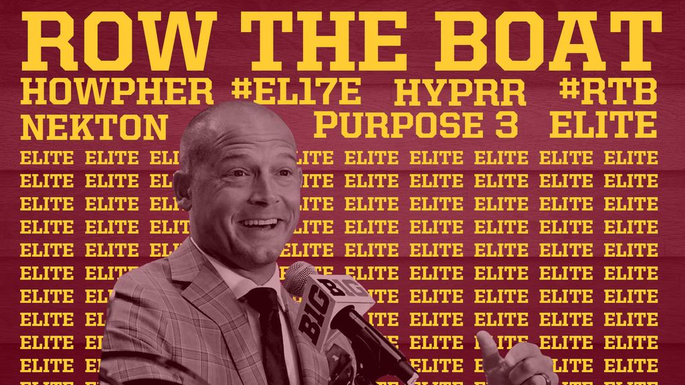

Minnesota
My Fellow Golden Gophers
The sport's beginnings were humble. Students began gathering to play the game recreationally and its popularity grew. Once the sport had taken off, it was only a matter of time before a team was formed to play against other schools. Early teams were very loosely organized, not requiring all of the players to be students and not having designated coaches. The players on the team started to recruit faculty members who had played football at schools in the East to help organize the team.
The Gophers enjoyed quite a bit of success in the early 20th century, posting winning records from 1900 to 1919. Head coach Henry L. Williams developed the "Minnesota shift", a predecessor to later quick line shifts, which was adopted widely.[9] Also Henry L. Williams led Minnesota to one of the NCAA's longest unbeaten streaks of 35 games, from 1903 to 1905 with 34 wins and 1 tie.[10] In 1932, Bernie Bierman became the Gopher head coach and led the Gophers to their first dynasty. From 1934 to 1936 the Gophers went on a run of winning three straight National Championships, the last Division I team to accomplish this feat. During the run, Minnesota went unbeaten in 28 straight games, 21 of which were consecutive victories. The school record for consecutive victories is 24, which spanned 3 seasons from 1903 to 1905. Led by halfback Bruce Smith, the Gophers also won two more national championships in 1940 and 1941, with Smith winning the Heisman Trophy in 1941. Those two seasons comprised most of an 18-game winning streak that stretched from 1939 to 1942.
After some mediocre seasons throughout the remainder of the 1940s and 1950s, the Gophers rose back to prominence in 1960 with their seventh national championship (because polling ended after the regular season, the Gophers were crowned AP and UPI national champions despite losing the Rose Bowl to Washington). That national championship followed a 1–8 record in 1958 and 2–7 record in 1959. Minnesota played in bowl games the two following years as well, in 1961 and 1962. The Gophers earned their first berth in the Rose Bowl by winning the 1960 Big Ten title. The following year, Minnesota returned to Pasadena despite a second-place finish in the conference. The Ohio State Buckeyes, the Big Ten champions in 1961, declined an invitation to the Rose Bowl because of tension between academics and athletics at the school. Minnesota beat UCLA 21–3 to claim its first and only Rose Bowl victory. Minnesota's last Big Ten title was in 1967, tying the Indiana Hoosiers and Purdue Boilermakers atop the standings.